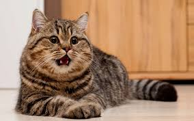

🐱коти — це маленькі домашні хижаки, відомі своєю грайливістю та незалежністю. Вони мають гострий зір у темряві, дуже чутливий слух і використовують вуса для орієнтації в просторі.
Коти — це невеликі хижі ссавці, одомашнені понад 10 000 років тому. Вони є одними з найпопулярніших домашніх улюбленців у світі завдяки своїй грайливій натурі та незалежному характеру.
Наукова назва: Felis catus
Середня тривалість життя: 12–18 років (деякі живуть до 20+ років)
Вага: 3–6 кг (залежить від породи)
Зір: чудово бачать у темряві
Слух: чують звуки до 64 кГц — набагато краще за людей
Вуса: допомагають орієнтуватися в просторі та вимірювати проходи
Коти можуть бути:
лагідними й товариськими
незалежними
активними або спокійними
дуже допитливими
Їхній характер залежить від породи, виховання та індивідуальності.
Британська короткошерста — спокійні, пухнасті, “ведмежата”
Сфінкс — безшерстні, дуже ласкаві
Мейн-кун — великі, добрі “велетні”
Сіамські коти — голосисті й розумні
Бенгальські — мають дикий леопардовий окрас
Котика потрібно годувати якісним кормом, який містить достатньо білка та корисних речовин.
У кота завжди має бути свіжа й чиста вода. Коти швидко зневоднюються, тому за мискою потрібно стежити щодня.
узнай більше про котикііііііів тут